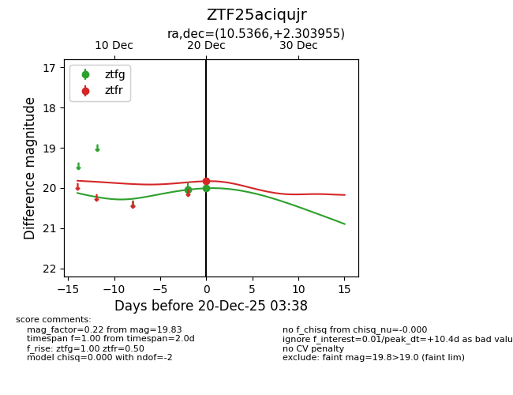
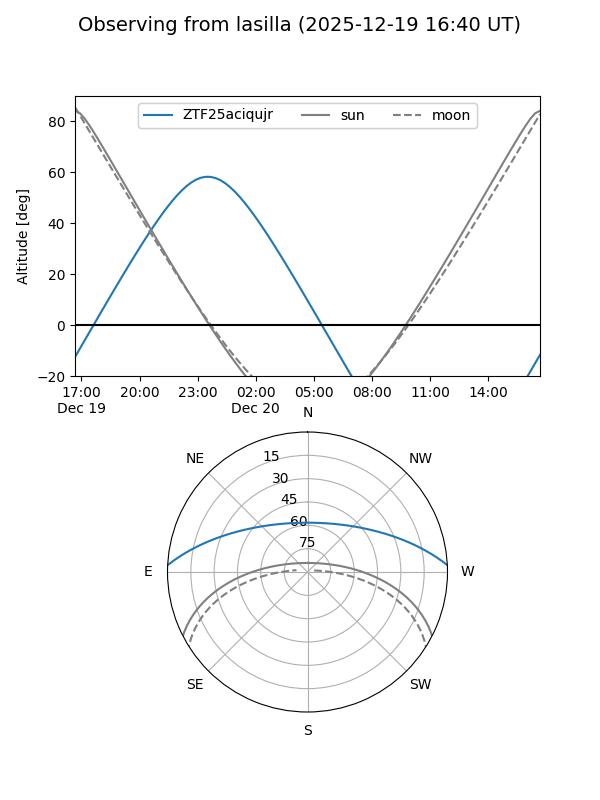
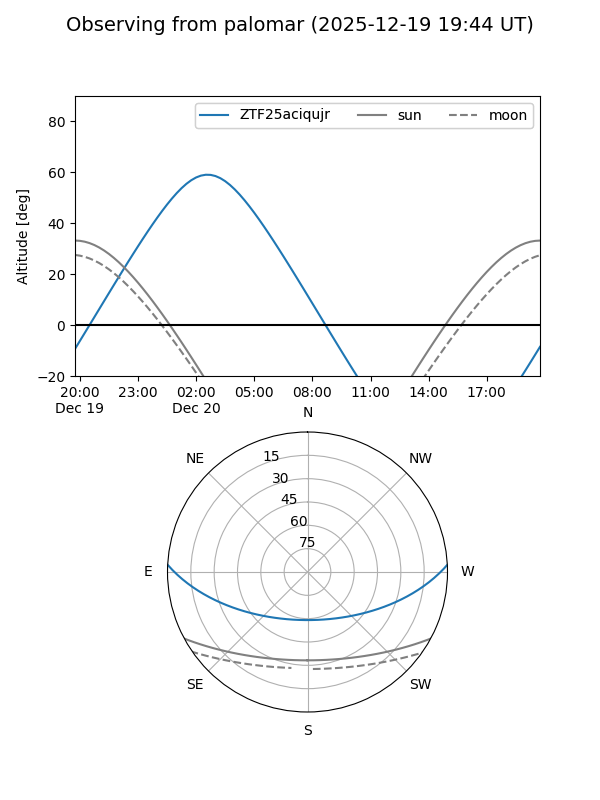
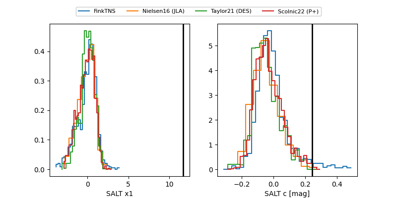

ZTF25aciqujr
Target ZTF25aciqujr at 2025-12-20 03:39
Aliases and brokers:
FINK: fink-portal.org/ZTF25aciqujr
Lasair: lasair-ztf.lsst.ac.uk/objects/ZTF25aciqujr
ALeRCE: alerce.online/object/ZTF25aciqujr
alt names
ZTF25aciqujr (ztf,fink_ztf)
Coordinates:
equatorial (ra, dec) = 10.5366,+2.30395
equatorial (HMS+DMS) = 00:42:08.79,+02:18:14.24
galactic (l, b) = (118.2170,-60.48270)
Flags:
Photometry:
last ztfg=20.01, ztfr=19.83
2 ztfg, 1 ztfr detections
Lightcurve

Visibility


Additional plots
